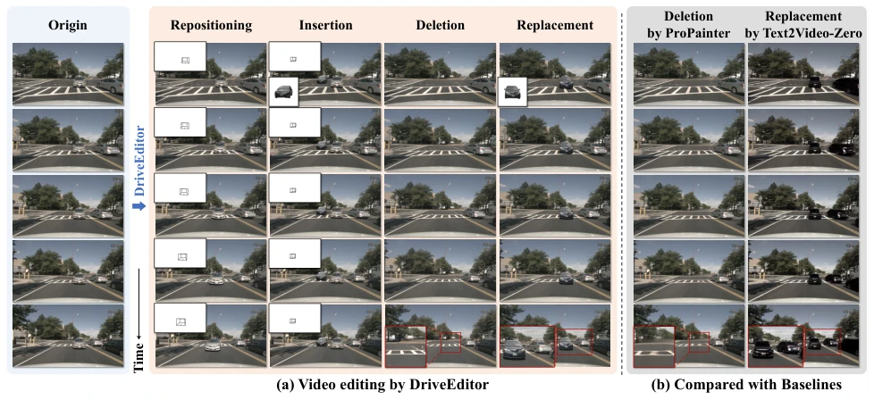
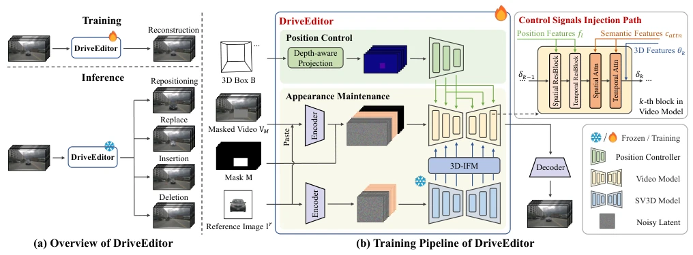
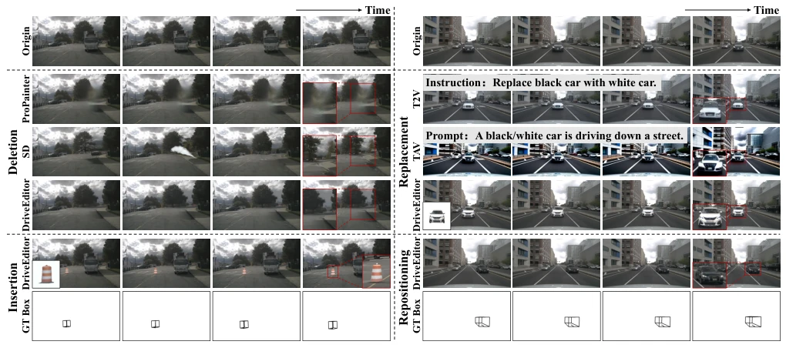
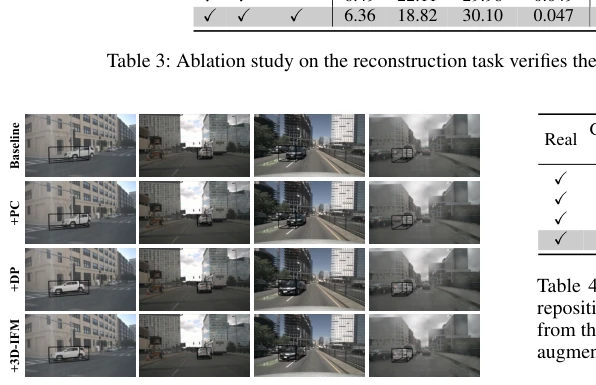
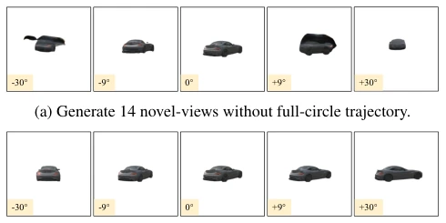
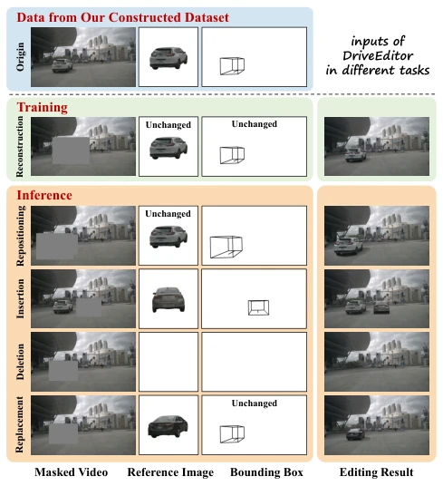
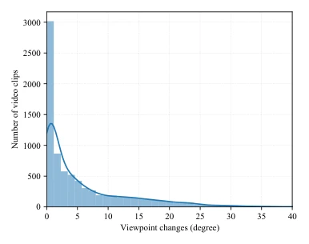
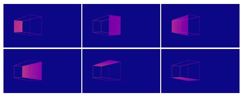
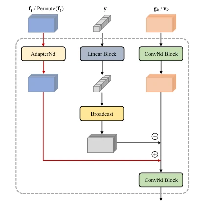
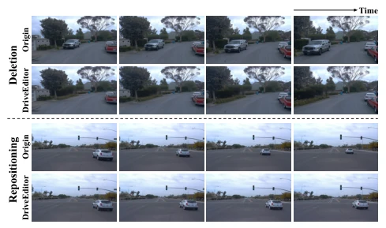

DriveEditor 号称统一框架，实则是个“数据炼金术士”。它把视频编辑和 3D 感知硬凑在一起，确实让自动驾驶数据增强有了新花样。但别高兴太早，它强依赖 3D 边界框，现实里哪有那么多完美标注？SV3D 的轨迹控制搞不定，作者直接上固定方位角“作弊”，这操作有点掩耳盗铃。不过对于下游感知模型训练来说，这合成数据确实能拉高 mRecall，算是给感知任务送了个“外挂”。总的来说，工具不错，但别指望它能直接开自动驾驶，它只是个高级修图师，专门给感知模型喂数据。
DriveEditor claims to be a unified framework, yet in essence acts as a "data alchemist." It forcibly integrates video editing and 3D perception, indeed introducing new variations to autonomous driving data augmentation. However, do not celebrate too early; it heavily relies on 3D bounding boxes, yet how many perfect annotations exist in reality? When SV3D's trajectory control proves unfeasible, the authors resort to fixed azimuth "cheating," an operation akin to stealing a bell while covering one's ears. Nevertheless, for downstream perception model training, this synthetic data does indeed elevate mRecall, effectively providing a "cheat code" for perception tasks. In summary, the tool is commendable, but do not expect it to enable direct autonomous driving; it is merely an advanced photo editor dedicated to feeding data to perception models.
研究动机Motivation
自动驾驶感知模型训练需要海量数据，但真实数据长尾分布严重，罕见场景稀缺 (Caesar et al. 2020)。现有生成方法如 MagicDrive 或 SubjectDrive 虽能生成场景，但缺乏细粒度物体控制 (Huang et al. 2024)。视频编辑领域如 Tune-A-Video 或 ProPainter 擅长风格或内容修改，却难以精确控制物体 3D 位置 (Wu et al. 2023; Zhou et al. 2023)。现有方法在保持高保真外观的同时，往往丢失位置信息或产生伪影。因此，亟需一个能同时精准控制物体位置、姿态及外观的统一框架，以生成高质量、多样化的驾驶场景数据，解决感知任务中的长尾分布挑战。
Training autonomous driving perception models requires massive amounts of data, yet real-world data suffers from severe long-tail distribution with scarce rare scenes (Caesar et al. 2020). Existing generation methods such as MagicDrive or SubjectDrive can generate scenes but lack fine-grained object control (Huang et al. 2024). In the video editing domain, methods like Tune-A-Video or ProPainter excel at style or content modification but struggle to precisely control object 3D positions (Wu et al. 2023; Zhou et al. 2023). Existing methods often lose positional information or produce artifacts while maintaining high-fidelity appearance. Therefore, there is an urgent need for a unified framework that can simultaneously precisely control object position, pose, and appearance to generate high-quality, diverse driving scene data, addressing the long-tail distribution challenges in perception tasks.

Figure 1: Visualizations of the editing capability of DriveEditor and baselines. (a) DriveEditor enables user-friendly repo- sitioning, insertion, replacement, and deletion within a unified framework. It precisely controls an object’s position and ori- entation based on the 3D bounding box (top left; required for repositioning and insertion tasks that alter object position), and maintains high-fidelity appearance attributes of the object from a single reference image (bottom left, required for insertion and replacement tasks that alter object appearance). (b) The deletion and replacement results compared with baselines. ProPainter’s deletion results suffer from artifacts. Text2Video-Zero employs the text prompt “replace the champagne-colored car with dark gray van” to guide the replacement
方法Method
DriveEditor 基于扩散模型，核心包含位置控制与外观维护两大模块。训练阶段采用重建任务，遮挡物体后利用参考图和 3D 框进行重构。推理时，位置控制模块将 3D 边界框各面投影为深度感知图像，通过 Position Controller 提取多尺度特征，分层注入视频 U-Net 的 ResBlocks，实现精确的位置与姿态引导。外观维护采用三级策略：底层通过 Cut-and-Paste 保留细节；中层利用 CLIP 特征维持语义一致性；高层引入 SV3D 生成的多视角先验，通过 3D-IFM 模块进行特征对齐与融合，解决单参考图视角受限问题。控制信号通过三条路径注入：位置特征入 ResBlocks，语义特征入 Cross-Attention，3D 特征加到 Block 输出。采用两阶段训练策略防止位置信息泄露，并使用零卷积层防止预训练模型受损。这种设计使得重定位、插入、替换、删除四种任务共享同一网络与输入集。
DriveEditor is based on diffusion models, with its core comprising two major modules: position control and appearance maintenance. During the training phase, a reconstruction task is adopted; after occluding objects, reconstruction is performed using reference images and 3D boxes. During inference, the position control module projects each face of the 3D bounding box into depth-aware images, extracts multi-scale features through the Position Controller, and injects them layer-by-layer into the ResBlocks of the video U-Net, achieving precise position and pose guidance. Appearance maintenance adopts a three-tier strategy: the bottom tier preserves details via Cut-and-Paste; the middle tier utilizes CLIP features to maintain semantic consistency; the top tier introduces multi-view priors generated by SV3D, performing feature alignment and fusion through the 3D-IFM module to resolve the limited view issue of single reference images. Control signals are injected via three paths: position features into ResBlocks, semantic features into Cross-Attention, and 3D features added to the Block output. A two-stage training strategy is adopted to prevent position information leakage, and zero convolution layers are used to prevent damage to the pre-trained model. This design enables the four tasks of repositioning, insertion, replacement, and deletion to share the same network and input set.

Figure 2: (a) High-level overview of DriveEditor. (b) Diagram of the training pipeline of DriveEditor. Three levels of appearance control are established based on the single reference image Ir: low-level details preservation through a cut-and-paste approach, high-level semantics maintenance through cross-attention (omitted in the pipeline for brevity), and incorporation of 3D priors derived from the frozen SV3D U-Net. For position control, we perform a projection that preserves depth information, followed by the Pose Controller to extract multi-scale features. Control signals are injected through three distinct paths in block of the video model: position features into ResBlocks, semantic features via cross-attention, and 3D features added to block outputs.
Experiments are constructed based on the nuScenes dataset, containing 10,110 video clips. Baseline comparisons include ProPainter, SD Inpainting, T2V, and TAV. Evaluation metrics cover FID, FVD, and 3D detection metrics (mRecall, mATE, mAOE). Results show that DriveEditor outperforms baselines on FID and FVD (FID 30.17 vs 36.13), and position control error is significantly reduced (mATE only 0.27 meters). Ablation experiments verify the effectiveness of the depth-aware projection (DP) and 3D information fusion module (3D-IFM). In downstream tasks, StreamPETR trained with repositioning and replacement data generated by DriveEditor achieves an NDS improvement to 0.581. Additionally, zero-shot experiments on the Waymo dataset demonstrate its generalization capability, despite training being based solely on nuScenes.

Figure 4: Top row: Original videos. Middle left: Qualitative comparison on the deletion task. ProPainter suffers from artifacts, while SD lacks temporal consistency. DriveEditor effectively generates plausible occluded regions. Middle Right: Qualitative comparison on the replacement task. T2V loses realism, for instance, the roof color remains unchanged. TAV alters the overall style of the video and leads to object deformations. In contrast, DriveEditor maintains high-fidelity object details from the ref- erence image. Bottom Left: Visualization of object insertion using DriveEditor. It enables precise control over object insertion position while maintaining appearance from the reference image. Bottom Right: Visualization of object repositioning using DriveEditor. The object is accurately

Figure 5: Effectiveness of our proposed modules in control- ling the position and orientation of objects. GT bounding boxes are outlined in black within the images.

Figure 7: Novel view images generated by the SV3D model. The corresponding angle of view change is indicated in the bottom left corner of each image. Our predefined set of az- imuth angles produces higher quality novel views compared to those generated from a non-full-circle trajectory.
其他图片Other Figures

Figure 3: DriveEditor is trained to reconstruct occluded ob- jects using inputs from our dataset. At inference time, it per- forms various editing tasks based on specific input prompts.

Figure 8: Angular distribution map of viewpoint changes of object within our training videos. As shown in the figure, the viewpoint changes of the target object in most videos are only a few degrees.

Figure 9: Visualization of our depth-aware position images. Areas with a depth of 0 are mapped to blue.

Figure 10: The injection of position features into the k-th spatial/temporal ResBlock of the video model. The newly added path is highlighted in red.

Figure 11: Qualitative results of zero-shot experiments on the Waymo dataset demonstrate DriveEditor’s strong gen- eralization capabilities despite being trained solely on the nuScenes dataset.